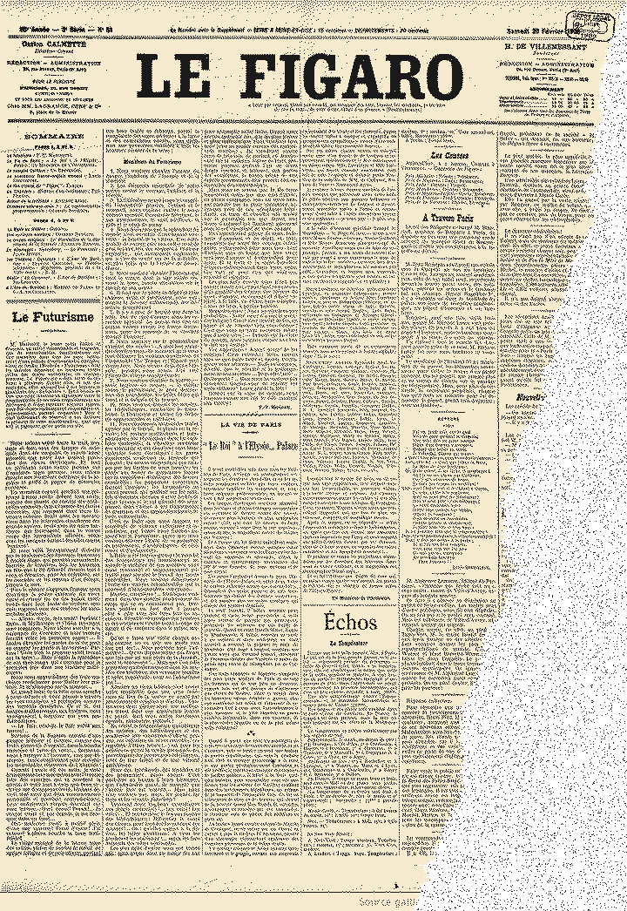
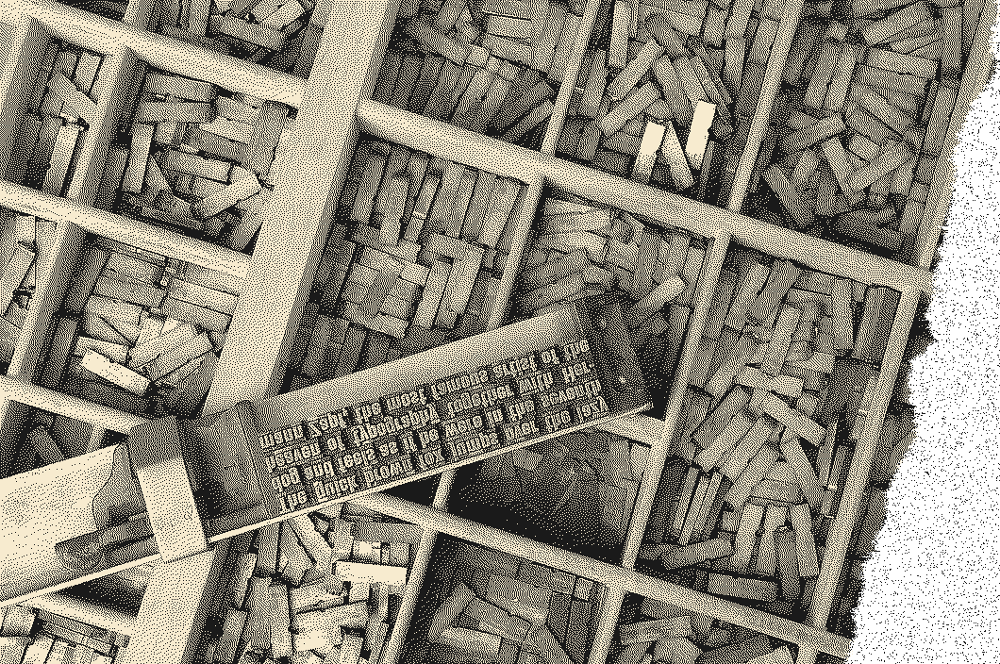
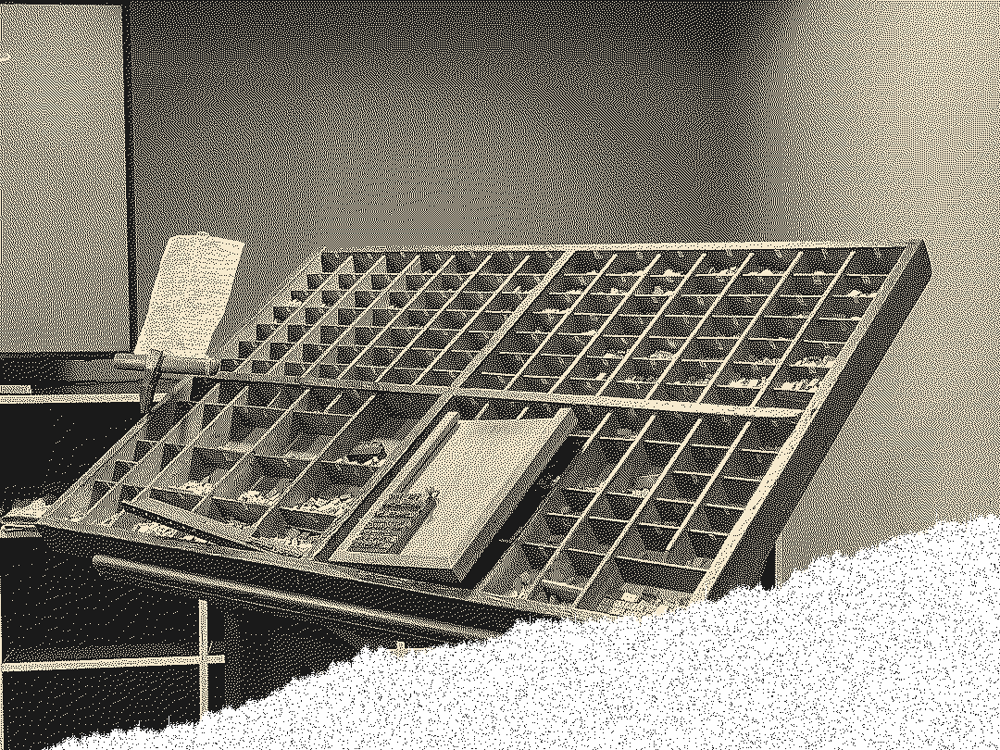
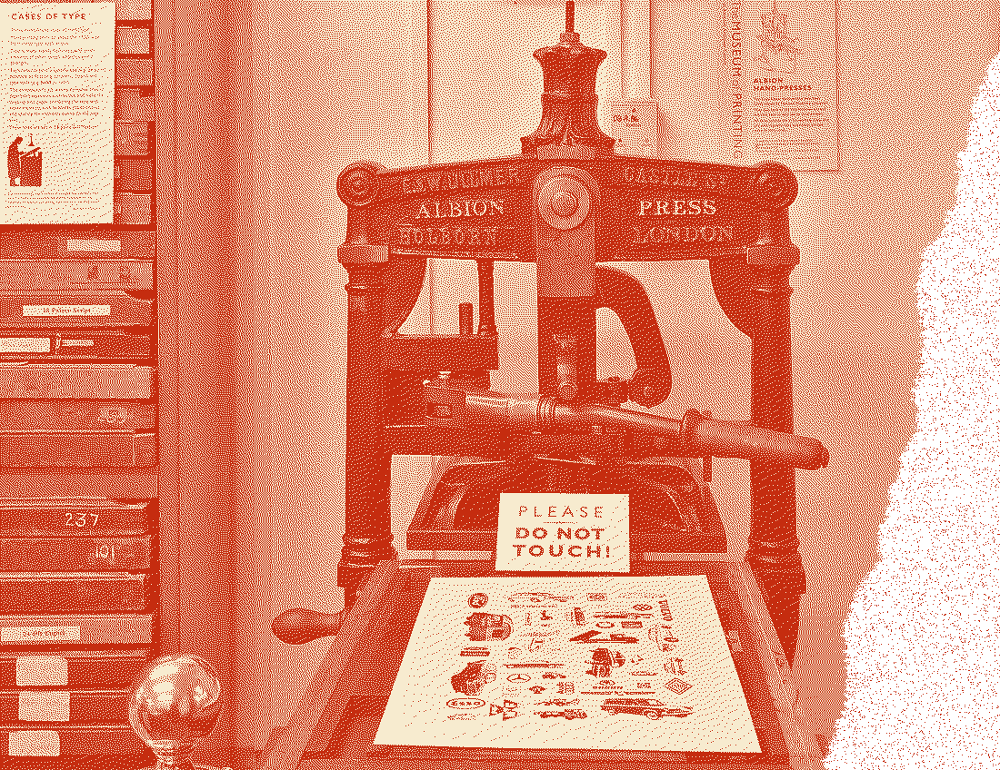
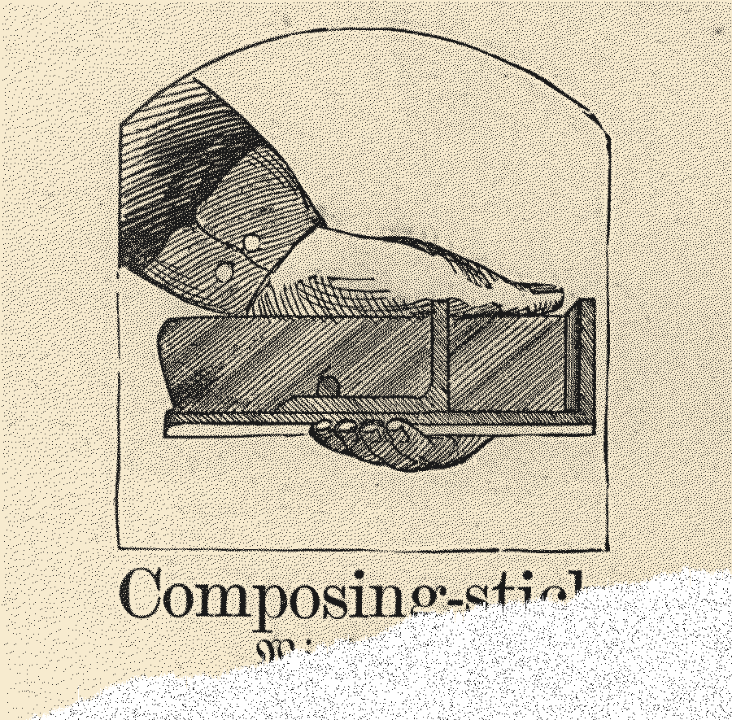
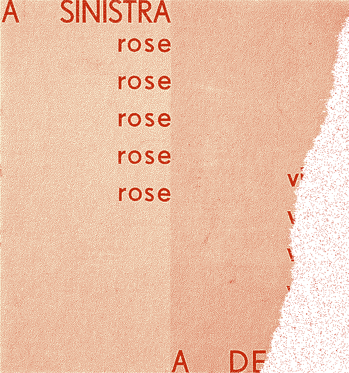

Manifesto del Futurismo
斜线先行01
这一叠单页的排版机制来自 1909 年 2 月 20 日《费加罗报》头版：九个词块共用同一条斜向基线，位移的加速度承担速度感，线条的数量不承担。
档案 1909-02-20 · 铅字活版，压力在纸上留下凹痕与油墨堆积边。
自由排字02
词与词之间不再排成一条水平的行。每个词块左端严格对齐同一条 12° 斜线，块内字距 0.02em、行高压到 0.95 倍行高，块高按内容行数取 2 至 6 行。
块内右端允许长短不齐，悬挂标点出血 0.5em。
铅字重压03
每块标题字下方压出 0.3mm 深的凹痕，凹痕背光侧走 1px 的压痕暗侧 #8E2A18，字缘的油墨堆积边宽 3px、不透明度 22%。容器全部直角，立体感只由这两件东西分担。
凹痕不靠投影，靠单向内阴影与同色暗侧；页面里没有一处 box-shadow。

一条斜线04
禁止每个块各转一个角度。斜向基线用 rotate(12deg) 包一层容器、内部文字转回 -12deg，避免逐块单独旋转造成字形锯齿。九个块共用一条线。
窄屏斜角降到 8°，再降到 4°，但必须保留。
三条速度线05
速度线只在滚动中出现，每个词块最多三条，长度分 24 / 40 / 56 三级，滚动停止后 260ms 内消失。禁止把它做成常驻装饰。
悬停时油墨堆积边由 22% 加深到 30%，速度线由 0 条长到 3 条，180ms，无位移。


滚得越深越快06
滚动量映射到斜向轨道位移，位移量与滚动量成平方关系：每滚 100px，位移从 20px 增到 90px。缓动性格是纯加速 cubic-bezier(0.5,0,1,1)，无回弹。
窄屏保留分段加速：每滚 100px 的位移由 12px 升到 44px。
压上九块07
加载时九个词块按块号从 01 到 09 沿斜线依次压上，每块 110ms，缓动为阶跃式。块与块之间用 140ms 硬切，并把进度尺的指针推一格。
点击块号会把该块沿斜线回推 12px 再弹回，240ms。

窄屏再发明08
窄屏把斜排改成「交错双列」：两列宽取 54% 与 42%，共用同一条斜向基线并错开 28px；再窄一级收成「窄列加留白栏」，左列 62%、右侧留白 38%，斜向基线与分段加速全部不变。
速度线在窄屏只保留 1 条，块号固定在各块左上角，触屏热区不小于 44×44px。
回推十二像素09
最后一个词块不再加速。点击任一 0 号块号，该块沿斜线回推 12px 再弹回；第 09 块的位移上限钉在 56px，进度尺停在 09。
第 3 个字正下方那枚 2×2px 墨点随块号每块向右偏 1px，到第 9 块累计偏 8px。


这一页的状态
两个状态都写在纸面上，不在脚本分支里：空状态是这条轨道最后一次投递的登记，错误状态是位移溢出时页面停在什么位置。两个都看得见，也都可以点开。
空状态 · 这条轨道暂时没有新词块
这条轨道暂时没有新词块。上一次投递是 1912 年 2 月
投递口每两周开一次，登记号接在 1912-02 之后。轨道空着的时候，进度尺停在 01 号块不动。
斜向轨道位移溢出（错误码 SLANT-16）
斜向轨道位移溢出（错误码 SLANT-16）：本次滚动已钳制在第 09 块的 56px 位移上限，进度尺停在 09，松手后恢复正常
钳制发生在滚动速度超过每秒 2400px 的时候，只钳位移，不钳滚动本身。